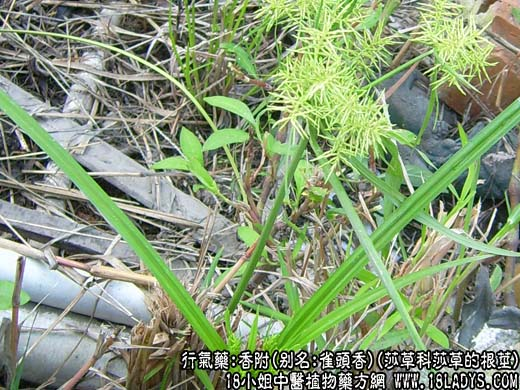
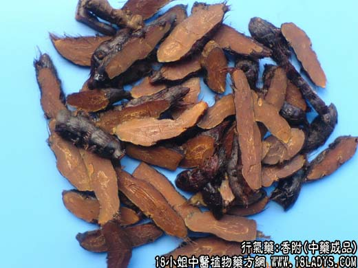

【中药概述】
香附，别名：雀头香、莎草根、香附子、雷公头、香附米、三棱草根,苦羌头，为莎草科草本植物莎草的根茎。辛、微苦、微甘，平。归肝、三焦经。
1．疏肝理气：用于肝郁气滞，胸腹胀痛，乳房胀痛，疝气腹痛，疏泄失常等症，如<理气平肝散>、<越鞠丸>。
2．活血调经：用于肝郁气滞的月经不调、痛经等症，如<香附芎归汤>、<备金散>。
3．用于寒滞肝脉，疝气腹痛，如<九味消疝散>、（韩氏医通<青囊丸>）。
【药物形态】
本品多呈纺锤形，有的略弯曲，长2～3.5cm，直径O.5～lcm。表面棕褐色或黑褐色，有纵皱纹，并有6～10个略隆起的环节，节上有未除净的棕色毛须和须根断痕；去净毛须者较光滑，环节不明显。质硬.经蒸煮者断面黄棕色或红棕色，角质样；生晒者断面色白而显粉性，内皮层环纹明显，中柱色较深，点状维管束散在。气香，味微苦。
【药效鉴别】香附能通十二经的气分，行气开郁，兼能调经理血。前人誉之为“气病之总司，女科之主帅”洵不诬也。
【药理作用】1.对某些真菌有抑制作用。2.有健胃、驱除消化道积气的作用。
【化学成分】含挥发油、糖类。
【用量用法】6——12g，水煎服，或入丸、散剂。
醋香附：辛、微酸、微甘，可引药入肝，以调经止疼之功见长。多用于妇科因肝郁气滞所致的乳房结块，两胁胀痛或经不通诸症。